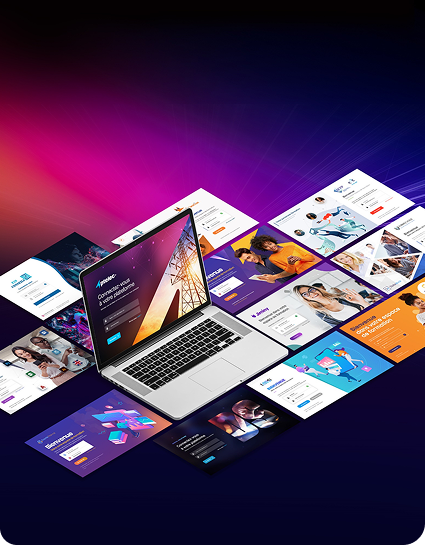
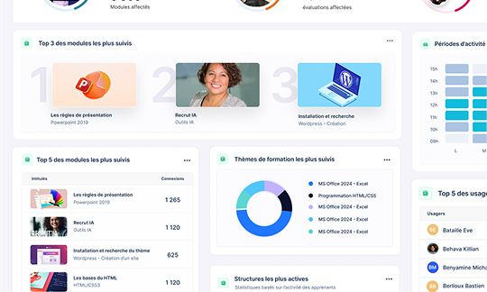

Module par module
Un module dure environ une heure et porte un objectif explicite. Vous composez vos parcours module par module, sans avoir à prendre un domaine entier.

Onlineformapro permet aux organismes de formation et aux entreprises d'intégrer un catalogue de 6 000 heures de modules e-learning directement dans leur propre plateforme LMS, aux normes SCORM, AICC et xAPI. Les contenus sont produits et maintenus en France depuis 1999.


De la sélection des modules à l'export des preuves de suivi.
Un module dure environ une heure et porte un objectif explicite. Vous composez vos parcours module par module, sans avoir à prendre un domaine entier.
Le module sort au format attendu par la plateforme que vous utilisez déjà. Pas de migration, pas de seconde connexion pour l'apprenant.
Vos apprenants voient votre logo, vos couleurs et votre adresse. La plateforme et les modules portent votre identité, pas la nôtre.

L'apprenant travaille dans une reproduction de l'interface, directement dans son navigateur. Rien à installer sur les postes, très peu de bande passante : un parc verrouillé ne bloque plus le déploiement.

Progression, temps de connexion et résultats remontent module par module dans votre LMS. Ce sont les pièces que réclament vos financeurs et un audit Qualiopi, au titre du critère 3.

Pas de cahier des charges, pas de chantier d'intégration. Le contenu existe : reste à choisir lequel et à ouvrir les accès.
Vous nous dites quels métiers vous formez, sur quelle plateforme et pour combien d'apprenants. Nous vous répondons par une sélection de modules et un chiffrage. Si le catalogue ne couvre pas votre besoin, nous le disons à ce moment-là.

Vous avez déjà un LMS : nous livrons les modules en SCORM distant, vous les rattachez à vos groupes et vous ouvrez les accès. Vous n'en avez pas : nous déployons la plateforme et les contenus sous 48 heures. Dans les deux cas, rien à installer sur les postes.

La progression remonte dans vos tableaux de bord au fil de l'eau. Vous voyez qui décroche avant la fin du parcours, et vous sortez les pièces justificatives le jour où un financeur ou un auditeur les demande.


Les parcours certifiants inscrits au RNCP, pour les apprenants que vous menez jusqu'au titre.

Le socle numérique : poste de travail, navigation, messagerie. Le prérequis de la plupart de vos parcours.

Word, Excel, PowerPoint et Outlook, de l'initiation au perfectionnement, en versions 2016 à 2024.

AutoCAD et Revit, pour vos publics du bâtiment et des bureaux d'études.

Le socle CléA au complet, pour vos parcours de remise à niveau et vos publics en insertion.

Maths, français et FLE, pour les remises à niveau comme pour les publics éloignés de l'écrit.

HTML, CSS, JavaScript et PHP, du premier script à l'application maintenue.

Gestion, ressources humaines et vie de l'entreprise, en complément de vos parcours tertiaires.

Réglementation, gestion locative et pratiques du secteur, pour vos publics de l'immobilier.

Anglais, espagnol et allemand, à intégrer à vos parcours ou à proposer en autonomie.

Leadership et gestion d'équipe, pour vos parcours d'encadrants et de managers de proximité.

Vente, relation client et stratégie digitale, pour vos parcours commerciaux.

Photoshop, Illustrator et InDesign, de l'initiation au perfectionnement.

SST, gestes qui sauvent et risques professionnels, pour vos formations réglementaires.

Infrastructure et sécurité, pour vos parcours d'administrateurs et de techniciens.

Choisissez le créneau qui vous arrange.
Réserver un créneauVous formez des apprenants : le catalogue complète vos parcours, à votre charte, prêt à diffuser.
Les modules mettent l'apprenant en situation : il manipule, il essaie, il recommence. Quinze domaines à ajouter à vos parcours, à votre charte, prêts à diffuser.
Nous sommes nous-mêmes un organisme certifié Qualiopi : nos contenus passent les audits que vous passez.
Dites-nous vos domaines et la plateforme que vous utilisez. Nous ouvrons un accès de démonstration aux modules concernés, sur vos propres parcours.
Réponse sous 48 h ouvrées · Sans engagement